这一节为什么这样简化
这一节只围绕 add_cpu.cpp 和 add_cuda.cu 两条主线，不把 CUDA 讲成 API 字典。每个新词都服务同一个流程：Host 准备、H2D、kernel、D2H、释放和验证。
PPT 故事线
- 先从第一节概念进入代码目标。
- 用 Host/Device 和内存图画清楚运行场景。
- 把 CPU for-loop 迁移成 CUDA 五步结构。
- 重点解释 Thread/Block/Grid、launch 配置和索引公式。
- 最后用编译、运行、Nsys 和性能入口衔接第三节。
逐页讲课大纲
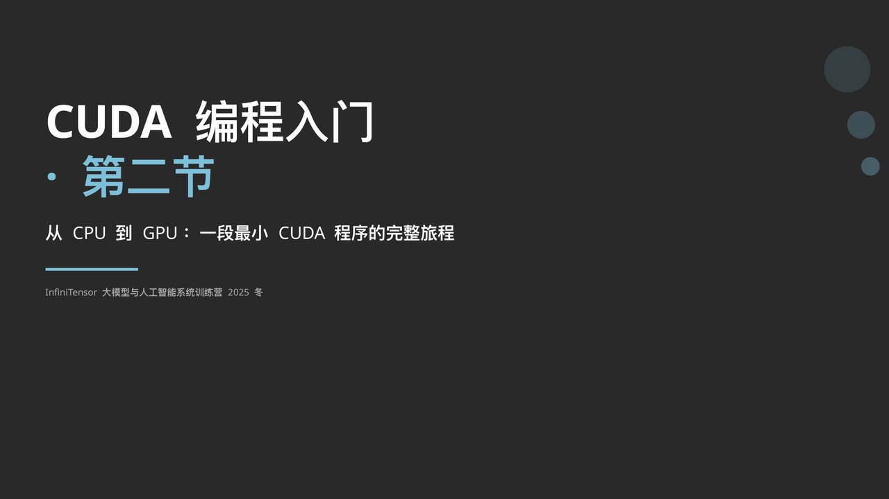
P01 · CUDA 编程入门
从概念进入代码
P01 · CUDA 编程入门
可以先说：“这一页先把‘CUDA 编程入门’讲清楚，后面的内容都从这个判断接出去。” 用“从 CPU 到 GPU 的完整旅程”开场，说明第二节不再停留在概念，而是跟着一段最小 CUDA vector add 程序走完准备、传输、计算、回传和验证。
讲的时候按这条线推进：明确本节只围绕一段最小 CUDA 程序，不扩散到所有 CUDA 语法。 这里会碰到的概念有 CPU / GPU 分工, CUDA。
讲画面时，画面要服务“从概念进入代码”这一段的主问题；讲的时候直接指向标题、图示或代码块里最关键的对象。 不要让学生只看装饰，要指着图、代码或表格说明它在支撑哪一个判断。
这里要收住边界：不要重讲第一节；本节所有概念都要回到这段代码怎么跑。 收尾时可以说：“这页先解决到这里，下一页我们把问题接到内容概览。”
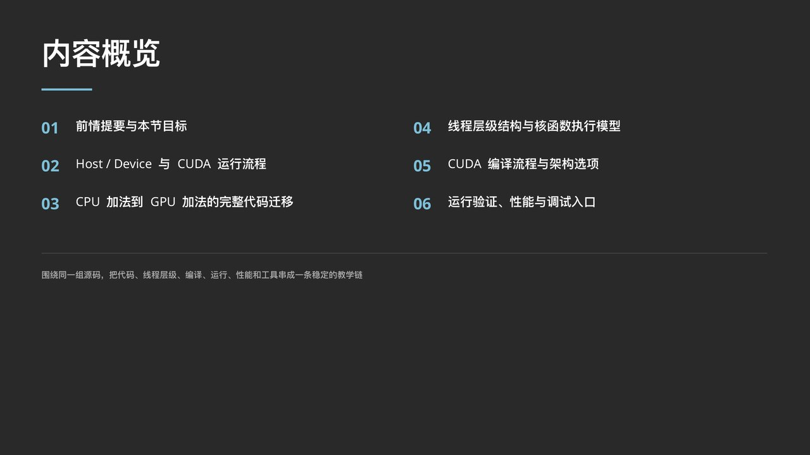
P02 · 内容概览
从概念进入代码
P02 · 内容概览
可以先说：“今天不是把术语摊开背一遍，我们按这条路线一点点把问题讲顺。” 先浏览整节课路线：前情提要、Host/Device、CPU 到 CUDA 代码迁移、线程层级、编译链、运行验证与性能入口。
讲的时候按这条线推进：明确本节只围绕一段最小 CUDA 程序，不扩散到所有 CUDA 语法。 这是路标页，只负责告诉学生现在进入哪一段，不在这里展开细节。 这里会碰到的概念有 CPU / GPU 分工, CUDA, Host / Device。
讲画面时，这一页用目录画面建立路线感，讲的时候只需要让学生知道后面按哪几段推进。 不要让学生只看装饰，要指着图、代码或表格说明它在支撑哪一个判断。
这里要收住边界：不要重讲第一节；本节所有概念都要回到这段代码怎么跑。 收尾时可以说：“内容概览这件事先收住，下一段我们换一个层级继续看。”
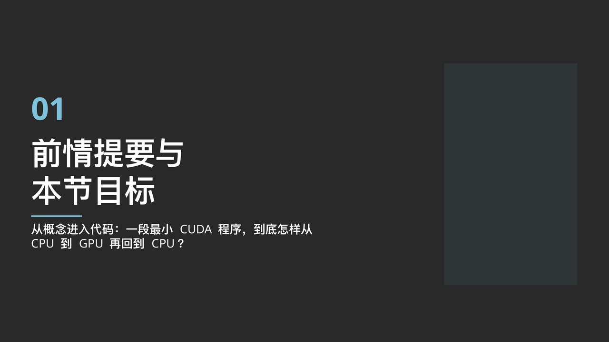
P03 · 01
从概念进入代码
P03 · 01
可以先说：“从这里开始进入从概念进入代码这一段，先记住我们要解决的问题，再看下一页细节。” 进入本节目标，直接抛出主问题：一段最小 CUDA 程序到底怎样从 CPU 准备数据，到 GPU 并行计算，再把结果回到 CPU。
讲的时候按这条线推进：明确本节只围绕一段最小 CUDA 程序，不扩散到所有 CUDA 语法。 这是路标页，只负责告诉学生现在进入哪一段，不在这里展开细节。 这里会碰到的概念有 CPU / GPU 分工, CUDA。
讲画面时，这一页是“从概念进入代码”的转场页，画面只负责把学生带入下一段，不需要在这里讲新知识。 不要让学生只看装饰，要指着图、代码或表格说明它在支撑哪一个判断。
这里要收住边界：不要重讲第一节；本节所有概念都要回到这段代码怎么跑。 收尾时可以说：“这页先解决到这里，下一页我们把问题接到上节课铺好了什么，这节课要解决什么。”
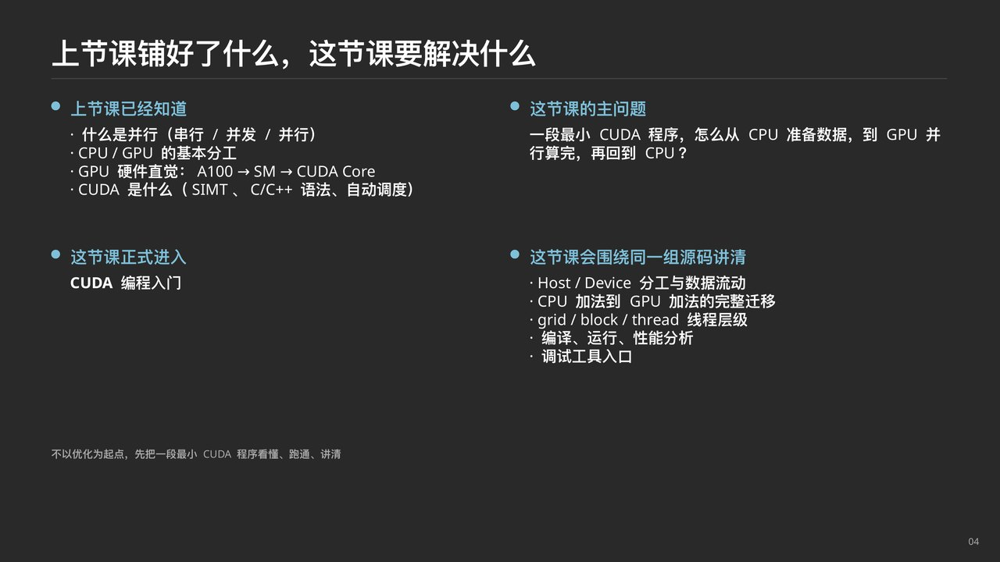
P04 · 上节课铺好了什么，这节课要解决什么
从概念进入代码
P04 · 上节课铺好了什么，这节课要解决什么
可以先说：“这一页先把‘上节课铺好了什么，这节课要解决什么’讲清楚，后面的内容都从这个判断接出去。” 把第一节内容压成第二节的前提：学生已经知道并行、CPU/GPU 分工、A100 到 SM/CUDA Core 的直觉，以及 CUDA 是编程入口；现在要看这些东西在代码里怎么出现。
讲的时候按这条线推进：明确本节只围绕一段最小 CUDA 程序，不扩散到所有 CUDA 语法。 这里会碰到的概念有 串行, 并发, 并行, 核心, CPU / GPU 分工。
讲画面时，前情提要页把第一节的并行、CPU/GPU、CUDA 入口压缩成代码课前提。 不要让学生只看装饰，要指着图、代码或表格说明它在支撑哪一个判断。
这里要收住边界：CUDA Core 不能和 CPU core 一比一比较，这里只建立 GPU 靠大量单元工作的直觉。 收尾时可以说：“上节课铺好了什么，这节课要解决什么这件事先收住，下一段我们换一个层级继续看。”
P05 · 02
Host/Device 与数据流
P05 · 02
可以先说：“从这里开始进入Host/Device 与数据流这一段，先记住我们要解决的问题，再看下一页细节。” 切入 Host/Device 与运行流程，提醒学生先画清运行场景：谁在做什么，数据在哪边，什么时候需要传输。
讲的时候按这条线推进：先画谁在做什么，再读 API；让 h_* 和 d_* 对应到画面位置。 这是路标页，只负责告诉学生现在进入哪一段，不在这里展开细节。 这里会碰到的概念有 CUDA, Host / Device。
讲画面时，这一页是“Host/Device 与数据流”的转场页，画面只负责把学生带入下一段，不需要在这里讲新知识。 不要让学生只看装饰，要指着图、代码或表格说明它在支撑哪一个判断。
这里要收住边界：Host Memory 和 Device Memory 不是同一块，结果算完仍需要 D2H。 收尾时可以说：“这页先解决到这里，下一页我们把问题接到Host 和 Device 是谁。”
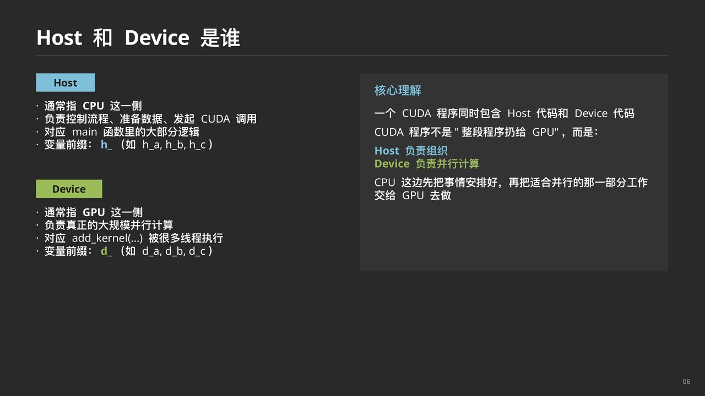
P06 · Host 和 Device 是谁
Host/Device 与数据流
P06 · Host 和 Device 是谁
可以先说：“这一页先把‘Host 和 Device 是谁’讲清楚，后面的内容都从这个判断接出去。” 讲 Host 和 Device 两侧角色：Host 通常是 CPU 侧，负责准备数据和控制流程；Device 通常是 GPU 侧，负责执行 kernel。
讲的时候按这条线推进：先画谁在做什么，再读 API；让 h_* 和 d_* 对应到画面位置。 这里会碰到的概念有 CPU / GPU 分工, CUDA, Host / Device。
讲画面时，Host/Device 对照页用于固定角色：CPU 侧控制流程，GPU 侧执行 kernel。 不要让学生只看装饰，要指着图、代码或表格说明它在支撑哪一个判断。
这里要收住边界：Host Memory 和 Device Memory 不是同一块，结果算完仍需要 D2H。 收尾时可以说：“这页先解决到这里，下一页我们把问题接到内存位置与数据传输路径。”
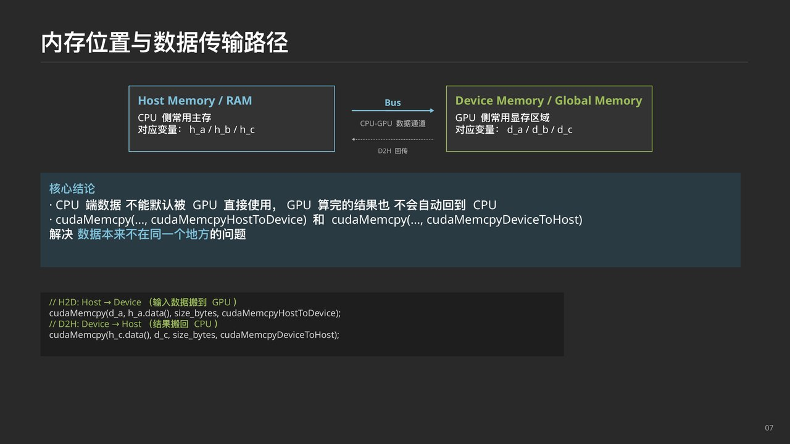
P07 · 内存位置与数据传输路径
Host/Device 与数据流
P07 · 内存位置与数据传输路径
可以先说：“这一页先把‘内存位置与数据传输路径’讲清楚，后面的内容都从这个判断接出去。” 讲内存位置和数据传输路径：h_a/h_b/h_c 在 Host Memory，d_a/d_b/d_c 在 Device Memory，中间经过 Bus，所以要显式 H2D 和 D2H。
讲的时候按这条线推进：先画谁在做什么，再读 API；让 h_* 和 d_* 对应到画面位置。 这里会碰到的概念有 CPU / GPU 分工, Host / Device。
讲画面时，内存路径图把 h_*、d_*、Host Memory、Device Memory 和 Bus 对齐，作用是解释为什么要显式拷贝。 不要让学生只看装饰，要指着图、代码或表格说明它在支撑哪一个判断。
这里要收住边界：Host Memory 和 Device Memory 不是同一块，结果算完仍需要 D2H。 收尾时可以说：“这页先解决到这里，下一页我们把问题接到CUDA 程序的完整运行流程。”
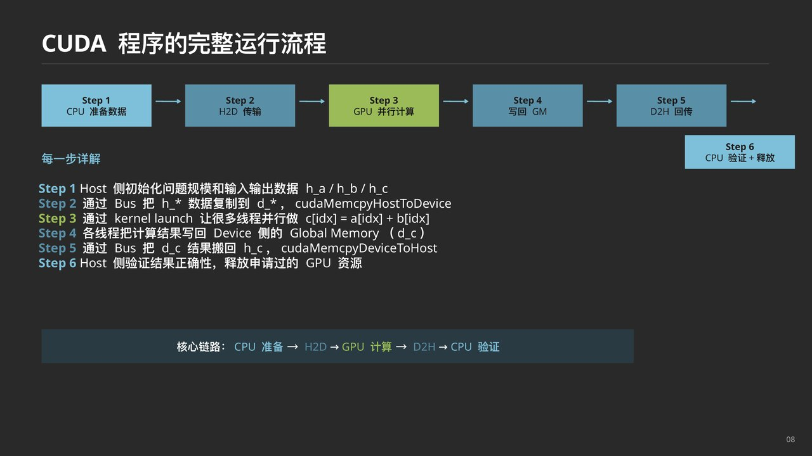
P08 · CUDA 程序的完整运行流程
Host/Device 与数据流
P08 · CUDA 程序的完整运行流程
可以先说：“这一页先把‘CUDA 程序的完整运行流程’讲清楚，后面的内容都从这个判断接出去。” 把完整 CUDA 运行流程串起来：CPU 准备数据，H2D 传输入 GPU，Device 上执行 kernel，结果留在 Device，再 D2H 回 Host 做验证和收尾。
讲的时候按这条线推进：先画谁在做什么，再读 API；让 h_* 和 d_* 对应到画面位置。 这里会碰到的概念有 并行, CPU / GPU 分工, CUDA, Host / Device。
讲画面时，完整流程图把 CPU 准备、H2D、kernel、D2H、CPU 验证串成一条线。 不要让学生只看装饰，要指着图、代码或表格说明它在支撑哪一个判断。
这里要收住边界：Host Memory 和 Device Memory 不是同一块，结果算完仍需要 D2H。 收尾时可以说：“CUDA 程序的完整运行流程这件事先收住，下一段我们换一个层级继续看。”
P09 · 03
CPU 到 CUDA 五步结构
P09 · 03
可以先说：“从这里开始进入CPU 到 CUDA 五步结构这一段，先记住我们要解决的问题，再看下一页细节。” 切入 CPU 加法到 GPU 加法的迁移，提醒学生先看整体骨架，不要一开始陷进长代码细节。
讲的时候按这条线推进：先读整体骨架，再读变量；把程序固定拆成准备、传入、计算、传回、释放。 这是路标页，只负责告诉学生现在进入哪一段，不在这里展开细节。 这里会碰到的概念有 CPU / GPU 分工, CUDA。
讲画面时，这一页是“CPU 到 CUDA 五步结构”的转场页，画面只负责把学生带入下一段，不需要在这里讲新知识。 不要让学生只看装饰，要指着图、代码或表格说明它在支撑哪一个判断。
这里要收住边界：不要逐行硬读长代码；导师应先帮学生抓结构。 收尾时可以说：“这页先解决到这里，下一页我们把问题接到CPU 加法基线：add_cpu.cpp。”
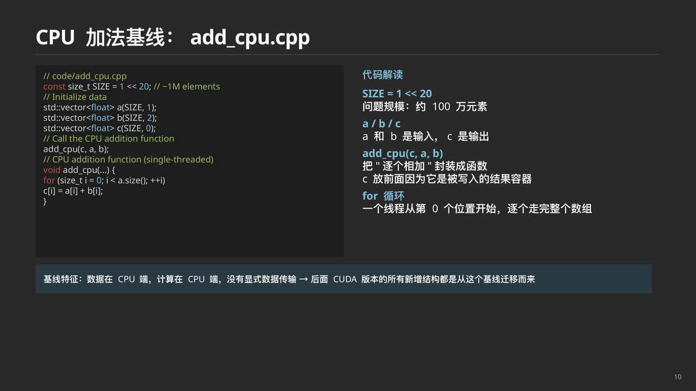
P10 · CPU 加法基线：add_cpu.cpp
CPU 到 CUDA 五步结构
P10 · CPU 加法基线：add_cpu.cpp
可以先说：“这页不要逐行背代码，我们先看数据在哪、谁在执行、这一行解决哪个动作。” 用 add_cpu.cpp 建立串行 baseline：SIZE 是元素数，a/b/c 是两个输入一个输出，for-loop 从头到尾逐个元素执行加法。
讲的时候按这条线推进：先读整体骨架，再读变量；把程序固定拆成准备、传入、计算、传回、释放。 这里会碰到的概念有 CPU / GPU 分工。
讲画面时，CPU baseline 代码页用于建立参照：普通 for-loop 一个元素一个元素算。 不要让学生只看装饰，要指着图、代码或表格说明它在支撑哪一个判断。
这里要收住边界：不要逐行硬读长代码；导师应先帮学生抓结构。 收尾时可以说：“这页先解决到这里，下一页我们把问题接到CUDA 加法完整代码：add_cuda.cu。”
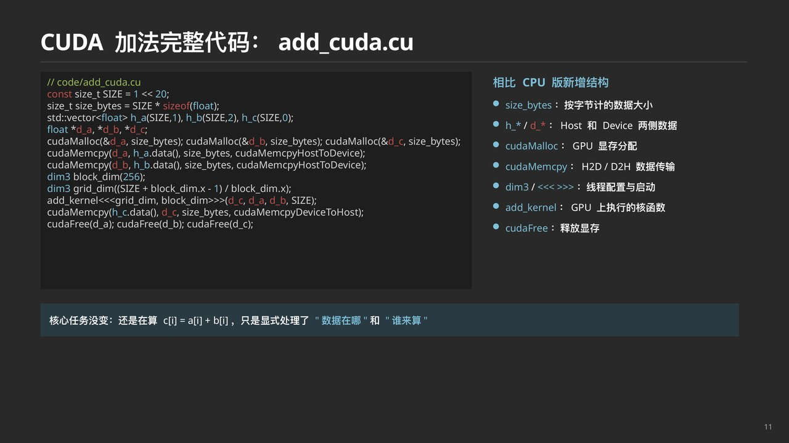
P11 · CUDA 加法完整代码：add_cuda.cu
CPU 到 CUDA 五步结构
P11 · CUDA 加法完整代码：add_cuda.cu
可以先说：“这页不要逐行背代码，我们先看数据在哪、谁在执行、这一行解决哪个动作。” 展示 add_cuda.cu 的完整形态，先让学生看出它比 CPU 版多了 size_bytes、h_* / d_*、cudaMalloc、cudaMemcpy、dim3、launch 和 kernel。
讲的时候按这条线推进：先读整体骨架，再读变量；把程序固定拆成准备、传入、计算、传回、释放。 先读变量和数据流，再读具体语法；代码页不要逐字念，重点是让导师知道这一页承担哪一个程序动作。 这里会碰到的概念有 CUDA。
讲画面时，CUDA 完整代码页用于先看结构，不逐行硬背 API；新增内容都服务 Host/Device 两侧流程。 不要让学生只看装饰，要指着图、代码或表格说明它在支撑哪一个判断。
这里要收住边界：不要逐行硬读长代码；导师应先帮学生抓结构。 收尾时可以说：“这页先解决到这里，下一页我们把问题接到CUDA 程序的五步结构。”
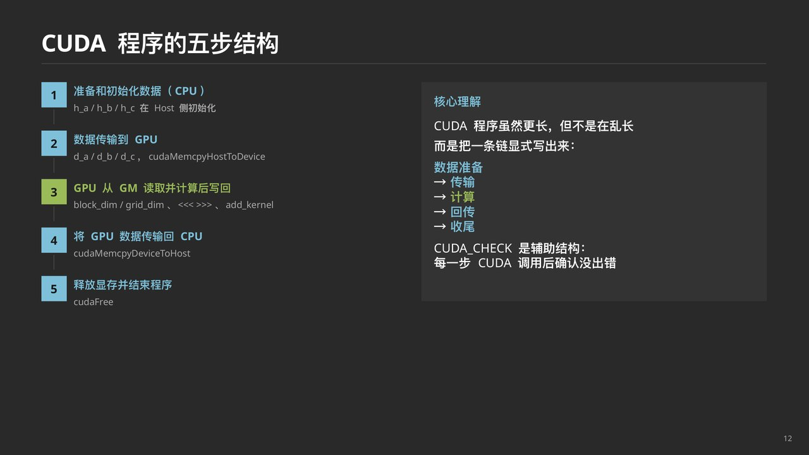
P12 · CUDA 程序的五步结构
CPU 到 CUDA 五步结构
P12 · CUDA 程序的五步结构
可以先说：“这一页先把‘CUDA 程序的五步结构’讲清楚，后面的内容都从这个判断接出去。” 把 CUDA 程序固定拆成五步：准备和初始化、Device 分配和 H2D、启动 kernel、D2H 回传、释放资源和结束程序。
讲的时候按这条线推进：先读整体骨架，再读变量；把程序固定拆成准备、传入、计算、传回、释放。 这里会碰到的概念有 CPU / GPU 分工, CUDA, Host / Device。
讲画面时，五步结构页把长代码切成准备、传入、计算、传回、释放，降低认知负荷。 不要让学生只看装饰，要指着图、代码或表格说明它在支撑哪一个判断。
这里要收住边界：不要逐行硬读长代码；导师应先帮学生抓结构。 收尾时可以说：“CUDA 程序的五步结构这件事先收住，下一段我们换一个层级继续看。”
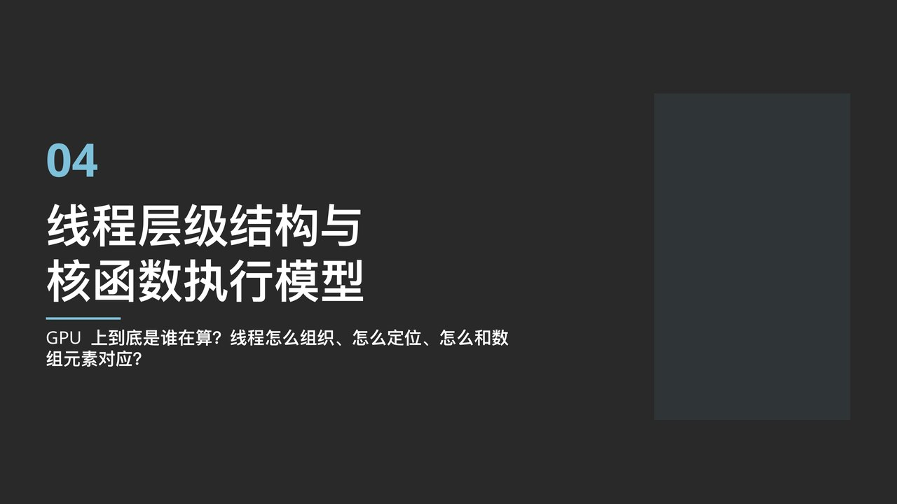
P13 · 04
线程层级与 kernel
P13 · 04
可以先说：“从这里开始进入线程层级与 kernel这一段，先记住我们要解决的问题，再看下一页细节。” 切入执行模型，提出问题：GPU 上到底是谁在算，线程怎么组织，线程怎样知道自己负责数组里的哪个位置。
讲的时候按这条线推进：索引公式要讲乘法和加法各自代表什么，再让学生代入几个 thread 算 idx。 这是路标页，只负责告诉学生现在进入哪一段，不在这里展开细节。 这里会碰到的概念有 线程, CPU / GPU 分工, kernel。
讲画面时，这一页是“线程层级与 kernel”的转场页，画面只负责把学生带入下一段，不需要在这里讲新知识。 不要让学生只看装饰，要指着图、代码或表格说明它在支撑哪一个判断。
这里要收住边界：<<<grid, block>>> 不是普通函数参数；if (idx < n) 是为最后一个 block 防越界。 收尾时可以说：“这页先解决到这里，下一页我们把问题接到SIMT 与线程层级结构。”
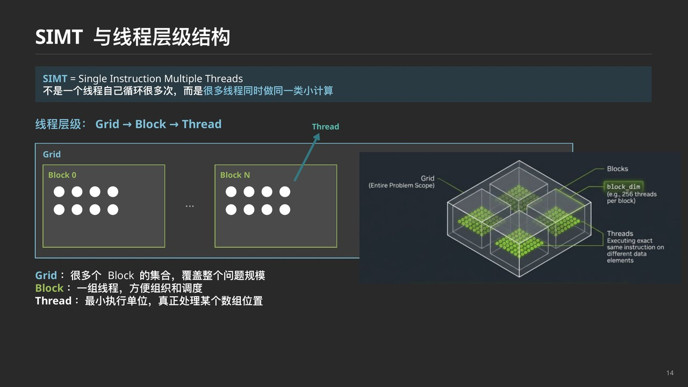
P14 · SIMT 与线程层级结构
线程层级与 kernel
P14 · SIMT 与线程层级结构
可以先说：“这一页先把‘SIMT 与线程层级结构’讲清楚，后面的内容都从这个判断接出去。” 讲 SIMT 和线程层级的总直觉：不是一个线程自己循环很多次，而是很多线程执行同一类计算规则，各自处理不同元素。
讲的时候按这条线推进：索引公式要讲乘法和加法各自代表什么，再让学生代入几个 thread 算 idx。 这里会碰到的概念有 线程, Thread / Block / Grid。
讲画面时，SIMT 和层级图用于说明很多线程执行同一份计算规则，而不是一个线程自己循环全部元素。 不要让学生只看装饰，要指着图、代码或表格说明它在支撑哪一个判断。
这里要收住边界：<<<grid, block>>> 不是普通函数参数；if (idx < n) 是为最后一个 block 防越界。 收尾时可以说：“这页先解决到这里，下一页我们把问题接到dim3、block_dim 与 grid_dim。”
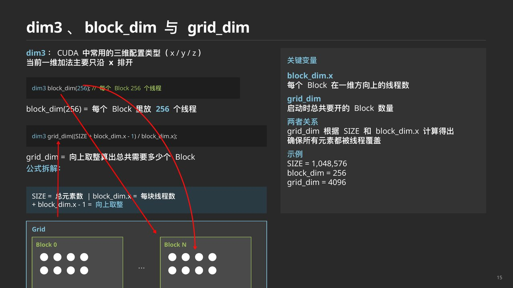
P15 · dim3、block_dim 与 grid_dim
线程层级与 kernel
P15 · dim3、block_dim 与 grid_dim
可以先说：“这一页先把‘dim3、block_dim 与 grid_dim’讲清楚，后面的内容都从这个判断接出去。” 讲 dim3、block_dim 和 grid_dim：dim3 描述 x/y/z 维度，当前一维加法主要用 x；block_dim 决定每块线程数，grid_dim 决定块数。
讲的时候按这条线推进：索引公式要讲乘法和加法各自代表什么，再让学生代入几个 thread 算 idx。 这里会碰到的概念有 CUDA, Thread / Block / Grid。
讲画面时，dim3、block 和 grid 图用于把配置参数和一维数组覆盖关系对齐。 不要让学生只看装饰，要指着图、代码或表格说明它在支撑哪一个判断。
这里要收住边界：<<<grid, block>>> 不是普通函数参数；if (idx < n) 是为最后一个 block 防越界。 收尾时可以说：“这页先解决到这里，下一页我们把问题接到Launch 配置与核函数。”
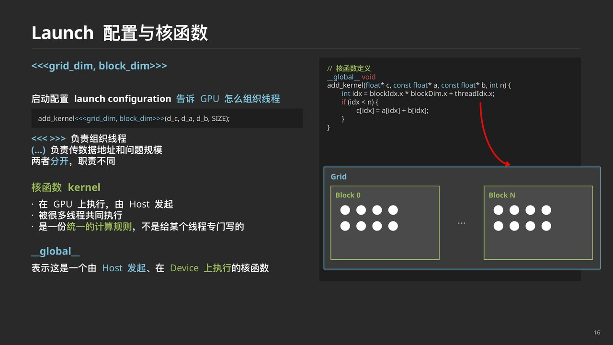
P16 · Launch 配置与核函数
线程层级与 kernel
P16 · Launch 配置与核函数
可以先说：“这一页先把‘Launch 配置与核函数’讲清楚，后面的内容都从这个判断接出去。” 讲 launch 配置和 kernel：<<<grid_dim, block_dim>>> 管线程组织，圆括号里的参数才是传给 kernel 的数据地址和问题规模；__global__ 表示 Host 发起、Device 执行。
讲的时候按这条线推进：索引公式要讲乘法和加法各自代表什么，再让学生代入几个 thread 算 idx。 先读变量和数据流，再读具体语法；代码页不要逐字念，重点是让导师知道这一页承担哪一个程序动作。 这里会碰到的概念有 线程, CPU / GPU 分工, kernel, Thread / Block / Grid, launch configuration。
讲画面时，launch 配置页把尖括号里的 grid/block 与普通函数参数区分开，是 CUDA 语法入口页。 不要让学生只看装饰，要指着图、代码或表格说明它在支撑哪一个判断。
这里要收住边界：<<<grid, block>>> 不是普通函数参数；if (idx < n) 是为最后一个 block 防越界。 收尾时可以说：“这页先解决到这里，下一页我们把问题接到索引公式与 CPU/GPU 执行对照。”
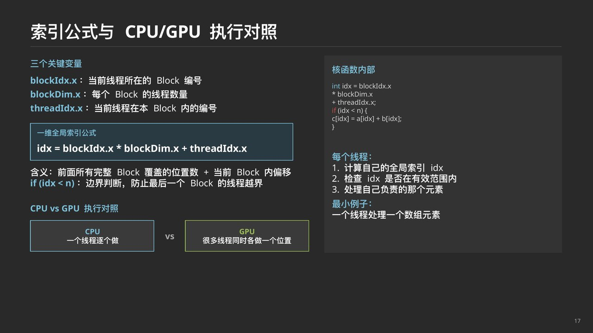
P17 · 索引公式与 CPU/GPU 执行对照
线程层级与 kernel
P17 · 索引公式与 CPU/GPU 执行对照
可以先说：“这一页先把‘索引公式与 CPU/GPU 执行对照’讲清楚，后面的内容都从这个判断接出去。” 讲索引公式：blockIdx.x * blockDim.x + threadIdx.x 等于前面完整 block 覆盖的元素数加当前 block 内偏移，得到当前线程负责的全局下标。
讲的时候按这条线推进：索引公式要讲乘法和加法各自代表什么，再让学生代入几个 thread 算 idx。 这里会碰到的概念有 线程, CPU / GPU 分工, Thread / Block / Grid。
讲画面时，索引公式页是关键映射图：前面完整 block 的元素数加上 block 内偏移，得到全局 idx。 不要让学生只看装饰，要指着图、代码或表格说明它在支撑哪一个判断。
这里要收住边界：<<<grid, block>>> 不是普通函数参数；if (idx < n) 是为最后一个 block 防越界。 收尾时可以说：“索引公式与 CPU/GPU 执行对照这件事先收住，下一段我们换一个层级继续看。”
P18 · 05
编译链与架构选项
P18 · 05
可以先说：“从这里开始进入编译链与架构选项这一段，先记住我们要解决的问题，再看下一页细节。” 切入编译流程，提醒学生 .cu 不能像普通 .cpp 一样处理，是因为里面同时写了 Host 控制代码和 Device kernel 代码。
讲的时候按这条线推进：只讲到能识别 nvcc、PTX、CUBIN、FATBIN、Compute Capability。 这是路标页，只负责告诉学生现在进入哪一段，不在这里展开细节。 这里会碰到的概念有 CUDA, nvcc。
讲画面时，这一页是“编译链与架构选项”的转场页，画面只负责把学生带入下一段，不需要在这里讲新知识。 不要让学生只看装饰，要指着图、代码或表格说明它在支撑哪一个判断。
这里要收住边界：不要把这一段讲成完整编译器课；Compute Capability 不是驱动版本号。 收尾时可以说：“这页先解决到这里，下一页我们把问题接到g++ vs nvcc 与 .cu 的双侧结构。”
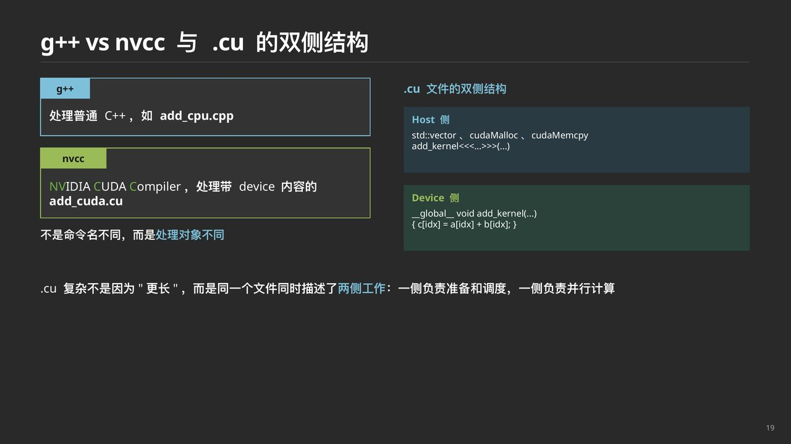
P19 · g++ vs nvcc 与 .cu 的双侧结构
编译链与架构选项
P19 · g++ vs nvcc 与 .cu 的双侧结构
可以先说：“这一页先把‘g++ vs nvcc 与 .cu 的双侧结构’讲清楚，后面的内容都从这个判断接出去。” 对比 g++ 和 nvcc：g++ 处理普通 C++ 基线，nvcc 处理带 Device 内容、__global__ 和 launch 语法的 CUDA 文件。
讲的时候按这条线推进：只讲到能识别 nvcc、PTX、CUBIN、FATBIN、Compute Capability。 这里会碰到的概念有 nvcc。
讲画面时，g++ vs nvcc 页用双侧结构解释 .cu 为什么不能当普通 .cpp 编。 不要让学生只看装饰，要指着图、代码或表格说明它在支撑哪一个判断。
这里要收住边界：不要把这一段讲成完整编译器课；Compute Capability 不是驱动版本号。 收尾时可以说：“这页先解决到这里，下一页我们把问题接到nvcc 的角色与 GPU 侧产物。”
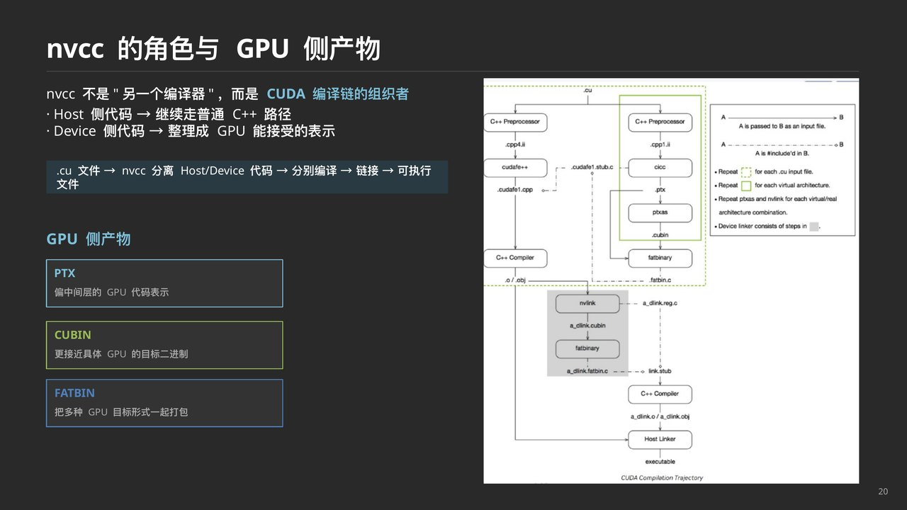
P20 · nvcc 的角色与 GPU 侧产物
编译链与架构选项
P20 · nvcc 的角色与 GPU 侧产物
可以先说：“这一页先把‘nvcc 的角色与 GPU 侧产物’讲清楚，后面的内容都从这个判断接出去。” 讲 nvcc 的角色：它不是简单替代 g++，而是组织 CUDA 编译链，把 Host 侧和 Device 侧分开处理，并生成 GPU 能接受的表示。
讲的时候按这条线推进：只讲到能识别 nvcc、PTX、CUBIN、FATBIN、Compute Capability。 先读变量和数据流，再读具体语法；代码页不要逐字念，重点是让导师知道这一页承担哪一个程序动作。 这里会碰到的概念有 CPU / GPU 分工, CUDA, Host / Device, nvcc, PTX。
讲画面时，编译产物页只建立 PTX/CUBIN/FATBIN 的位置感，不展开编译器内部。 不要让学生只看装饰，要指着图、代码或表格说明它在支撑哪一个判断。
这里要收住边界：不要把这一段讲成完整编译器课；Compute Capability 不是驱动版本号。 收尾时可以说：“这页先解决到这里，下一页我们把问题接到Compute Capability 与编译选项。”
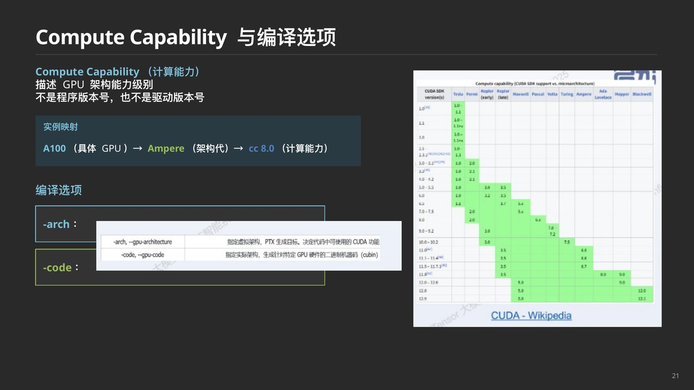
P21 · Compute Capability 与编译选项
编译链与架构选项
P21 · Compute Capability 与编译选项
可以先说：“这一页先把‘Compute Capability 与编译选项’讲清楚，后面的内容都从这个判断接出去。” 讲 Compute Capability 与编译选项：它描述 GPU 架构能力级别，不是程序版本或驱动版本；A100/Ampere/cc 8.0 是现实映射。
讲的时候按这条线推进：只讲到能识别 nvcc、PTX、CUBIN、FATBIN、Compute Capability。 这里会碰到的概念有 CPU / GPU 分工, Compute Capability。
讲画面时，Compute Capability 页把架构能力和 A100/Ampere 现实型号对齐，避免把它理解成软件版本。 不要让学生只看装饰，要指着图、代码或表格说明它在支撑哪一个判断。
这里要收住边界：Compute Capability 是架构能力口径，不是 CUDA 版本、驱动版本或程序版本。 收尾时可以说：“这页先解决到这里，下一页我们把问题接到Makefile 与项目编译命令。”
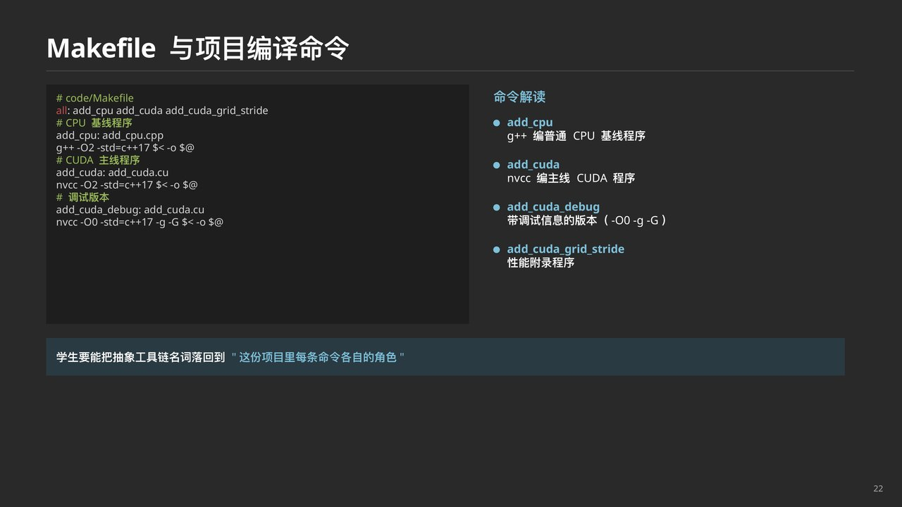
P22 · Makefile 与项目编译命令
编译链与架构选项
P22 · Makefile 与项目编译命令
可以先说：“这页不要逐行背代码，我们先看数据在哪、谁在执行、这一行解决哪个动作。” 用 Makefile 把编译链落到项目入口：add_cpu 是 CPU 基线，add_cuda 是主线 CUDA 程序，debug 和 grid-stride 版本用于后续观察和扩展。
讲的时候按这条线推进：只讲到能识别 nvcc、PTX、CUBIN、FATBIN、Compute Capability。 先读变量和数据流，再读具体语法；代码页不要逐字念，重点是让导师知道这一页承担哪一个程序动作。 这里会碰到的概念有 线程, CPU / GPU 分工, CUDA。
讲画面时，Makefile 页把前面的编译概念落到项目命令，导师可以用它解释各 target 的用途。 不要让学生只看装饰，要指着图、代码或表格说明它在支撑哪一个判断。
这里要收住边界：不要把这一段讲成完整编译器课；Compute Capability 不是驱动版本号。 收尾时可以说：“Makefile 与项目编译命令这件事先收住，下一段我们换一个层级继续看。”
P23 · 06
运行验证与性能入口
P23 · 06
可以先说：“从这里开始进入运行验证与性能入口这一段，先记住我们要解决的问题，再看下一页细节。” 切入运行验证和性能入口，强调程序能跑通不等于线程配置合理，也不等于整个 CUDA 链路一定快。
讲的时候按这条线推进：用 nvidia-smi、Nsys 时间线、grid-strided loop 和总耗时拆分收束。 这是路标页，只负责告诉学生现在进入哪一段，不在这里展开细节。 这里不需要额外展开新术语，重点是把页面角色讲清楚。
讲画面时，这一页是“运行验证与性能入口”的转场页，画面只负责把学生带入下一段，不需要在这里讲新知识。 不要让学生只看装饰，要指着图、代码或表格说明它在支撑哪一个判断。
这里要收住边界：只看 kernel 快不等于完整程序快；这正是第三节性能模型的入口。 收尾时可以说：“这页先解决到这里，下一页我们把问题接到nvidia-smi 与线程配置合理性。”
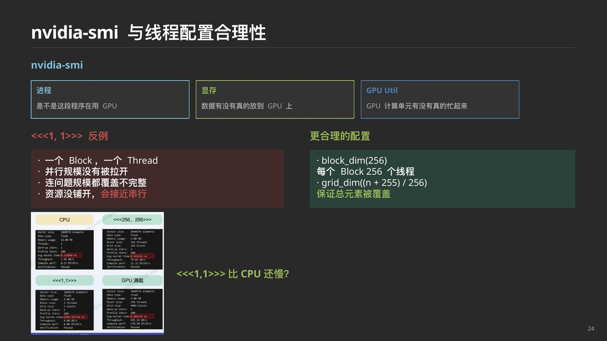
P24 · nvidia-smi 与线程配置合理性
运行验证与性能入口
P24 · nvidia-smi 与线程配置合理性
可以先说：“这一页先把‘nvidia-smi 与线程配置合理性’讲清楚，后面的内容都从这个判断接出去。” 讲 nvidia-smi 的最小观察：看进程确认程序是否用到 GPU，看显存确认是否分配/传输，看 GPU Util 粗略判断 GPU 是否忙起来；同时用 <<<1,1>>> 说明只上 GPU 不等于用好 GPU。
讲的时候按这条线推进：用 nvidia-smi、Nsys 时间线、grid-strided loop 和总耗时拆分收束。 先说工具回答什么问题，再说页面上的指标；不要把工具界面讲成按钮教程。 这里会碰到的概念有 线程, CPU / GPU 分工。
讲画面时，nvidia-smi 和线程配置页用于说明“确实用了 GPU”和“线程覆盖是否合理”是两个问题。 不要让学生只看装饰，要指着图、代码或表格说明它在支撑哪一个判断。
这里要收住边界：只看 kernel 快不等于完整程序快；这正是第三节性能模型的入口。 收尾时可以说：“这页先解决到这里，下一页我们把问题接到Launch Overhead 与 Nsys 时间线分析。”
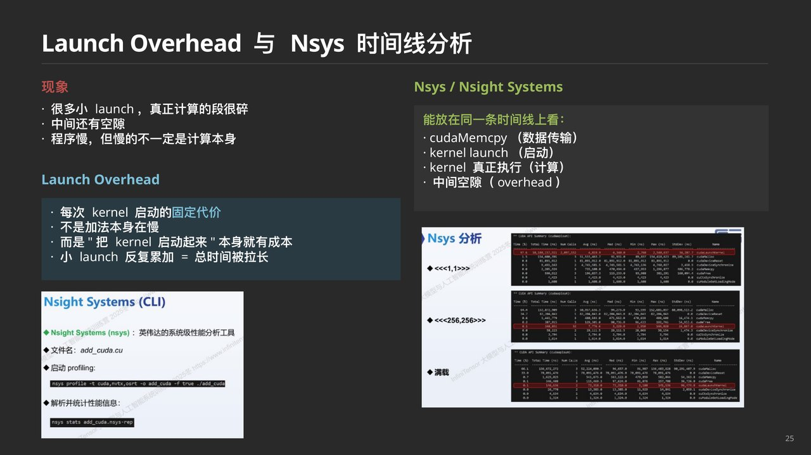
P25 · Launch Overhead 与 Nsys 时间线分析
运行验证与性能入口
P25 · Launch Overhead 与 Nsys 时间线分析
可以先说：“这一页先把‘Launch Overhead 与 Nsys 时间线分析’讲清楚，后面的内容都从这个判断接出去。” 讲 launch overhead 和 Nsys 时间线：如果很多小 kernel 被 Host 反复发起，时间线会出现很多短片段和空隙，慢可能慢在启动和调度，不一定慢在计算本身。
讲的时候按这条线推进：用 nvidia-smi、Nsys 时间线、grid-strided loop 和总耗时拆分收束。 先说工具回答什么问题，再说页面上的指标；不要把工具界面讲成按钮教程。 这里会碰到的概念有 kernel, launch configuration, Nsys。
讲画面时，Nsys 时间线页把 launch overhead、memcpy 和 kernel 时间拆开，衔接第三节性能模型。 不要让学生只看装饰，要指着图、代码或表格说明它在支撑哪一个判断。
这里要收住边界：Nsys 看系统时间线，不负责解释单个 kernel 的全部内部瓶颈。 收尾时可以说：“这页先解决到这里，下一页我们把问题接到Grid-Strided Loop。”
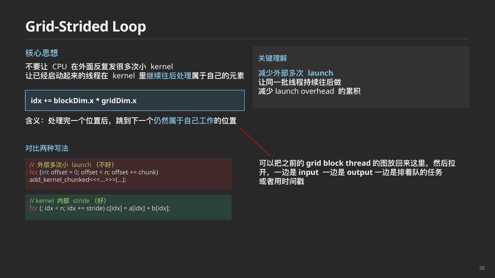
P26 · Grid-Strided Loop
运行验证与性能入口
P26 · Grid-Strided Loop
可以先说：“这一页先把‘Grid-Strided Loop’讲清楚，后面的内容都从这个判断接出去。” 讲 grid-strided loop：不要让 CPU 在外面反复 launch 很多小 kernel，而是让已经启动的线程在 kernel 内按步长继续处理后面的元素。
讲的时候按这条线推进：用 nvidia-smi、Nsys 时间线、grid-strided loop 和总耗时拆分收束。 先读变量和数据流，再读具体语法；代码页不要逐字念，重点是让导师知道这一页承担哪一个程序动作。 这里会碰到的概念有 核心, 线程, CPU / GPU 分工, kernel, Thread / Block / Grid。
讲画面时，grid-strided loop 图用于说明不要让 CPU 外层反复发小 kernel，而让线程在 kernel 内继续按 stride 处理。 不要让学生只看装饰，要指着图、代码或表格说明它在支撑哪一个判断。
这里要收住边界：只看 kernel 快不等于完整程序快；这正是第三节性能模型的入口。 收尾时可以说：“这页先解决到这里，下一页我们把问题接到性能评估指标。”
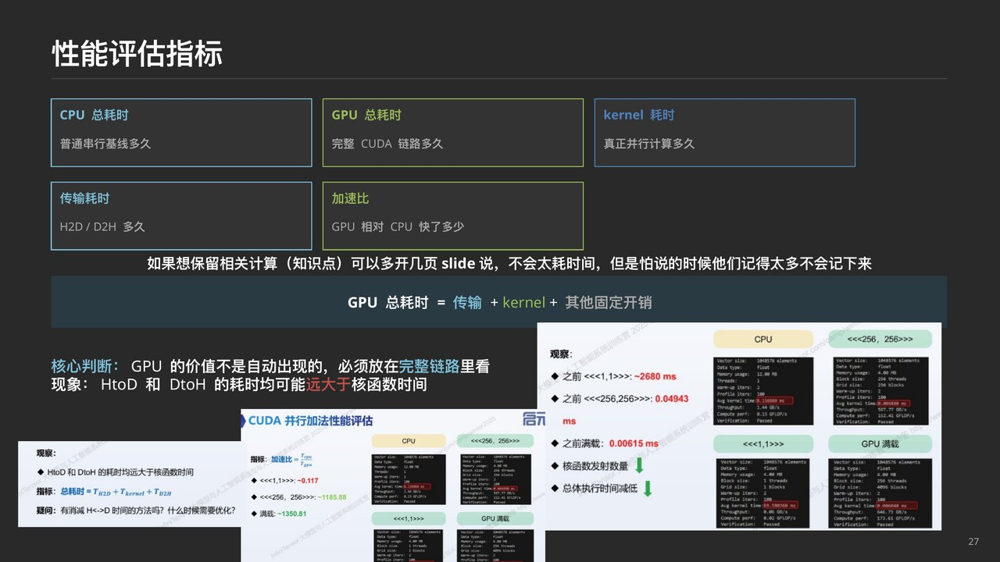
P27 · 性能评估指标
运行验证与性能入口
P27 · 性能评估指标
可以先说：“这一页先把‘性能评估指标’讲清楚，后面的内容都从这个判断接出去。” 讲性能评估指标：CPU 总耗时、GPU 总耗时、kernel 时间、H2D/D2H 时间要分开看，因为它们回答的是不同层面的问题。
讲的时候按这条线推进：用 nvidia-smi、Nsys 时间线、grid-strided loop 和总耗时拆分收束。 这里会碰到的概念有 串行, 并行, CPU / GPU 分工, CUDA, kernel。
讲画面时，性能指标页把 CPU 总耗时、GPU 总耗时、kernel time 和加速比拆开，避免只看单一数字。 不要让学生只看装饰，要指着图、代码或表格说明它在支撑哪一个判断。
这里要收住边界：只看 kernel 快不等于完整程序快；这正是第三节性能模型的入口。 收尾时可以说：“这页先解决到这里，下一页我们把问题接到可以保留提问。”
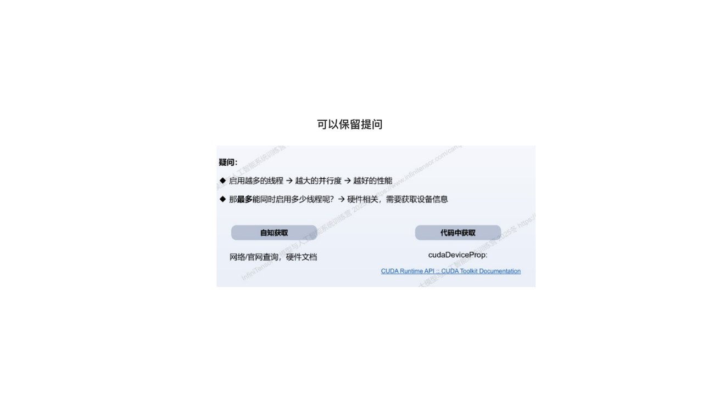
P28 · 可以保留提问
运行验证与性能入口
P28 · 可以保留提问
可以先说：“这一页先把‘可以保留提问’讲清楚，后面的内容都从这个判断接出去。” 保留提问时间，建议导师把学生的问题拉回主线：Host/Device、线程组织、编译链、运行验证，不在这里展开性能模型细节。
讲的时候按这条线推进：用 nvidia-smi、Nsys 时间线、grid-strided loop 和总耗时拆分收束。 这里不需要额外展开新术语，重点是把页面角色讲清楚。
讲画面时，画面要服务“运行验证与性能入口”这一段的主问题；讲的时候直接指向标题、图示或代码块里最关键的对象。 不要让学生只看装饰，要指着图、代码或表格说明它在支撑哪一个判断。
这里要收住边界：只看 kernel 快不等于完整程序快；这正是第三节性能模型的入口。 收尾时可以说：“这页先解决到这里，下一页我们把问题接到设备信息、调试入口与问题式收束。”
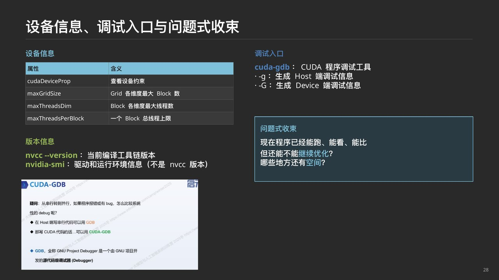
P29 · 设备信息、调试入口与问题式收束
运行验证与性能入口
P29 · 设备信息、调试入口与问题式收束
可以先问学生：“看到‘设备信息、调试入口与问题式收束’，你们觉得真正卡住我们的是什么？” 讲设备信息和调试入口：cudaDeviceProp 用来读设备属性，调试时先问程序在哪个设备上、线程配置是否覆盖问题规模、错误检查有没有做。
讲的时候按这条线推进：用 nvidia-smi、Nsys 时间线、grid-strided loop 和总耗时拆分收束。 这里会碰到的概念有 Host / Device, Thread / Block / Grid。
讲画面时，设备信息与调试入口页用于说明程序能跑后还要知道硬件约束和最基本排查入口。 不要让学生只看装饰，要指着图、代码或表格说明它在支撑哪一个判断。
这里要收住边界：只看 kernel 快不等于完整程序快；这正是第三节性能模型的入口。 收尾时可以说：“这页先解决到这里，下一页我们把问题接到第二节结束。”
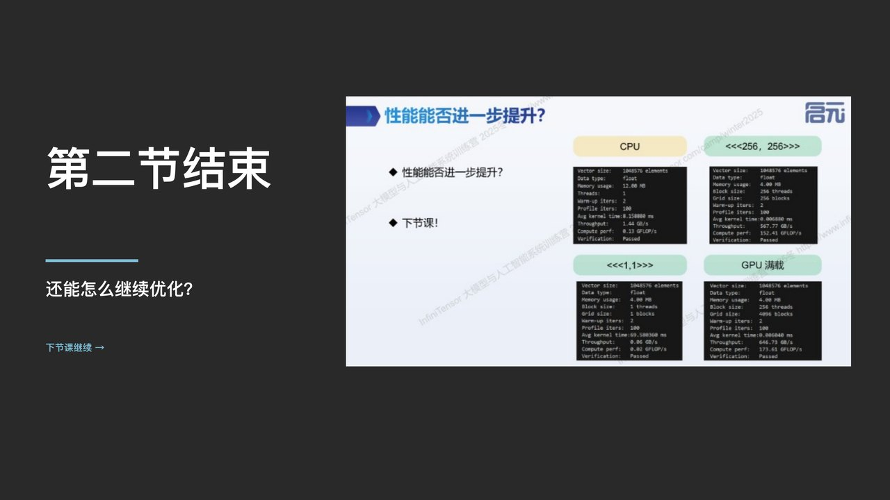
P30 · 第二节结束
运行验证与性能入口
P30 · 第二节结束
可以先说：“我们把今天真正要带走的话压成几句，后面的课就接在这些判断上。” 结束第二节，收束成一句话：现在程序已经能从 CPU 到 GPU 再回 CPU；下一节要继续问，结果正确以后，到底跑得好不好、瓶颈在哪里。
讲的时候按这条线推进：用 nvidia-smi、Nsys 时间线、grid-strided loop 和总耗时拆分收束。 这里不需要额外展开新术语，重点是把页面角色讲清楚。
讲画面时，画面要服务“运行验证与性能入口”这一段的主问题；讲的时候直接指向标题、图示或代码块里最关键的对象。 不要让学生只看装饰，要指着图、代码或表格说明它在支撑哪一个判断。
这里要收住边界：只看 kernel 快不等于完整程序快；这正是第三节性能模型的入口。 收尾时可以说：“这一节到这里先停住，后面的问题就是把今天的判断继续落到下一节或后续练习里。”
本 HTML 大纲按发布 PPT 逐页对照整理；预览图来自当前发布 PPT 或 Lesson 03/04 的已生成 origin_image。它用于向导师说明每页讲什么和为什么这样设计，不替代课堂逐字稿。